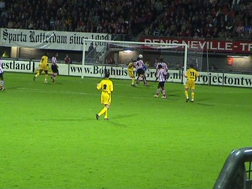
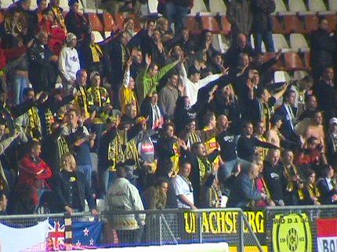
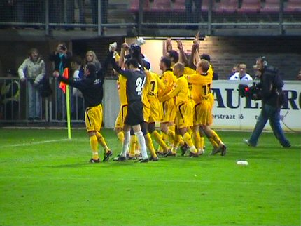

|
Sparta - Roda JC (2-3) 22 oktober 2005
|
Fout shirt, goede sjaal.
Voor het eerst in drie jaar is een oude bekende terug in ons midden.
Ereronde langs alle tribunes voor deze twee gasten die ergens een bronzen
medaille mee hebben gewonnen. Ze liepen ook langs het Roda-vak
waarvandaan een spontaan applaus.
Uitbundig vlagvertoon op de Dennis Neville en naastgelegen vakken.
Op de muziek van het nostalgische Sparta-lied betreden de teams het veld.
Na een dikke minuut komt Roda al met de schrik vrij als debutant Begois
de bal op de paal ziet belanden.
Vrije trap Sparta door De Fauw. Hij schiet de bal vanaf 30 meter achter
Begois: 1-0, (7').

Na een hoge bal voor Sparta-doel is Zoontjes er eerder bij dan zijn keeper.
Een eigen doelpunt is het gevolg: 1-1, (30').
Na de gelijkmaker leek Sparta klaar voor de sloop. Roda werd brutaler en
het Kerkraadse publiek reageerde met dominant gezang.
Sparta zit in geldnood want een bier kost hier liefst 3 euro !!!
Flip speelt nog steeds voor Roda.
Doelman Ponk wil de dalende bal wegstompen. Dat mislukt en Cissé kopt
hem er dan maar in: 1-2, (64').
Knuffelpartij met Huub Stevens.
Oper scoort even later met het hoofd uit een corner: 1-3, (70').
De topscorer van Roda JC in innige omhelzing met Vicelich.

Druk mobilofoonverkeer op de Kasteeltribune. Het leek eerst alsof er een
relletje was, maar er bleek een man onwel geworden te zijn.

"Sieg", al lang niet meer gehoord.
In de 85e min. scoort Cvetkov 2-3 waardoor de spanning terugkeert. Roda
komt onder zeer grote druk te staan en ontsnapt enkele malen aan de
gelijkmaker van Sparta.
Eindelijk fluit Wegereef af. De eerste uitzege is binnen.
Kah maakt het zich gemakkelijk.

De Rodasupporters worden bedankt.
De cooling-down in het inmiddels lege stadion.
Eerst afbieren bij het chique "Kasteelheertjes".
En daarna in het niet al te drukke supportershome.
Detailopname van het supportershome.
© Koempels Pleasure Dome
|